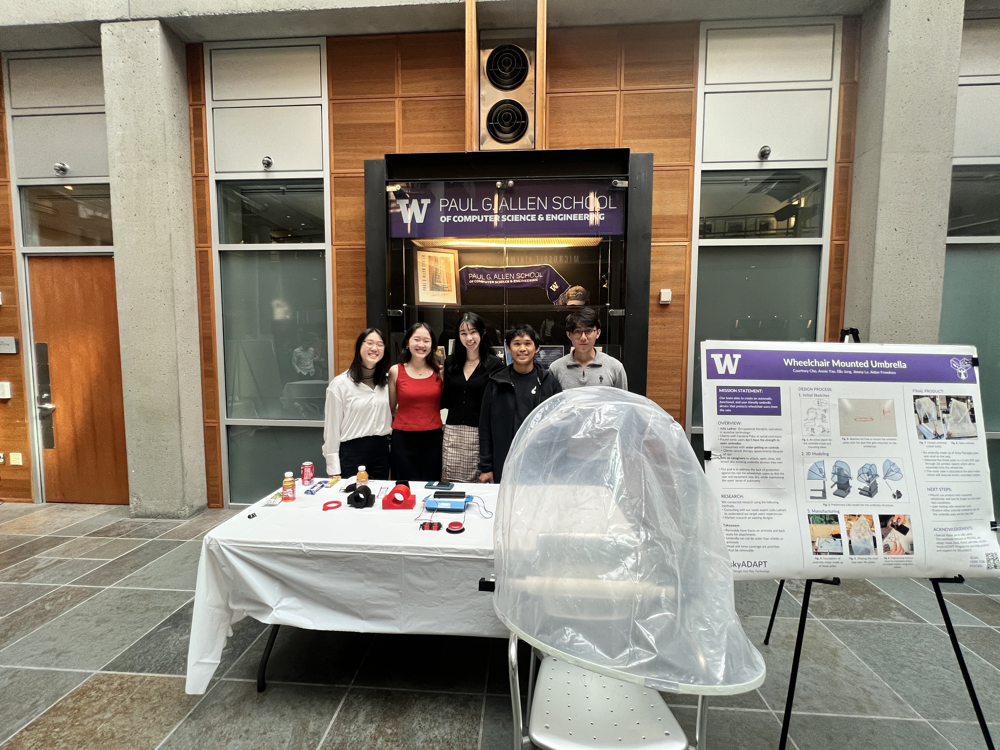

A Wheelchair Umbrella You Can Open Yourself
People were cancelling physical therapy appointments because it was raining. Not because of the rain — because opening an umbrella meant waiting for someone else.

Finding the Real Problem
We started with a vague brief — rain protection for wheelchair users — and got to a sharp one by talking to someone who knew the population.
We consulted Julia Ladner, an occupational therapist specializing in assistive technology, whose clients include people with cerebral palsy and spinal cord injuries. What she told us reframed the project entirely. The problem was not that wheelchair users lacked umbrellas. It was that:
- Many users don't have the grip strength to open one. A standard umbrella assumes a hand that can push a catch and force a spring — an assumption that quietly excludes a lot of people.
- Water on the chair controls is a real concern. A powered chair's joystick and control panel are exposed, and users are protecting expensive equipment, not just themselves.
- Existing devices still require a caregiver. Users who already owned umbrella attachments relied on someone else to attach, open, close, and detach them — which converts an umbrella into a scheduling problem.
- So people just don't go. Clients were cancelling therapy appointments because of rain.
That last point set the actual design target. The goal was not a better umbrella. It was removing the caregiver from the loop.

Constraints From the Hardware
Alongside the expert consultation we ran a market teardown of existing designs and studied the chairs themselves. Powered wheelchairs are not a blank mounting surface, and that generated most of our hard requirements:
Mount to existing tracks
Permobil chairs have accessory tracks on the armrests and back seat. Using them meant no drilling, no modification, and no voided warranty.
Never exceed the chair's footprint
The umbrella could not be wider than the wheels or armrests — anything that overhangs turns doorways and ramps into obstacles.
Prioritize head and torso
Full-body coverage wasn't the goal. Keeping the user and the chair's controls dry was.
Fully removable
Users wanted it off the chair in fair weather, without tools and without help.
Operable without grip strength
Deployment had to work for someone who cannot grasp, push, or twist — which ruled out every mechanical trigger.
Keep water off the controls
Coverage geometry had to account for the joystick and control panel, not just the seat.
What We Built
The final prototype is a canopy of three fiberglass poles carrying a vinyl tarp. The poles mount to a 3-inch PVC pipe through 3D-printed adapters that clamp onto the wheelchair's existing accessory tracks. The outermost pole is driven by a servo motor, so the canopy rotates open and closed at the press of a button.
Button actuation is the whole point. It replaces the one action — gripping and forcing an umbrella open — that the people we designed for cannot reliably perform, and it is the difference between a device that needs a caregiver and one that doesn't.
Why these materials
- Fiberglass poles — enough stiffness to hold canopy shape at low weight, and they flex rather than snap under wind load
- Vinyl tarp — waterproof, cheap, and replaceable if it tears
- 3D-printed adapters — the geometry between round pole stock and a proprietary wheelchair track isn't something you can buy, and printing let us re-cut the interface each time we measured the chair more carefully
- 3-inch PVC spine — off-the-shelf, structurally adequate, and trivially replaceable


Leading the Mechanical Design
As Mechanical Design Team Lead I was responsible for the physical system — pole geometry, the mounting interface, and the handoff to the electrical side where the servo attaches. Across a two-year project with five members, that meant as much coordination as design.
What that actually involved
- Translating Julia's clinical input into mechanical requirements the team could design against, rather than a list of things users said
- Holding the line on the width constraint when more coverage was tempting — an umbrella that doesn't fit through a doorway is worse than no umbrella
- Defining the mechanical-to-electrical boundary so the servo mount and the pole design could progress in parallel
- Running design reviews and keeping a multi-year, rotating student team oriented on the same target
- Onboarding newer members onto assistive technology design principles
Our first instinct was to make the umbrella bigger and more protective. The needs expert's input pointed the opposite direction: coverage was never the bottleneck, independence was. Every hour we would have spent optimizing canopy area would have made the product worse at the thing that actually mattered. Talking to someone who knew the users before we started designing is the reason we built the right thing.

Where It Stands
The prototype deploys and retracts under button control and mounts to the intended track interface. It has not yet been through user testing — that is the next milestone, and deliberately the next one rather than a later one.
Next steps
- Mount the system to a Permobil chair and test through extended use and open-air conditions
- User testing with wheelchair users — the design decisions above are grounded in expert consultation, and they need validation from the people who would actually use it
- Evaluate alternative pole and canopy materials for durability and weight
This is a working prototype with a validated problem definition, not a finished product. The requirements came from an occupational therapist who works with the target population daily, which is a strong foundation — but expert consultation is not the same as testing with end users, and that gap is the most important thing left to close.